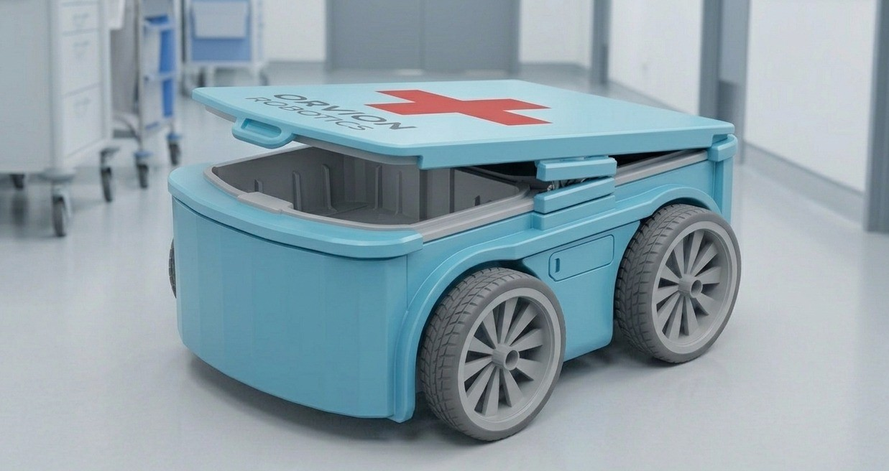
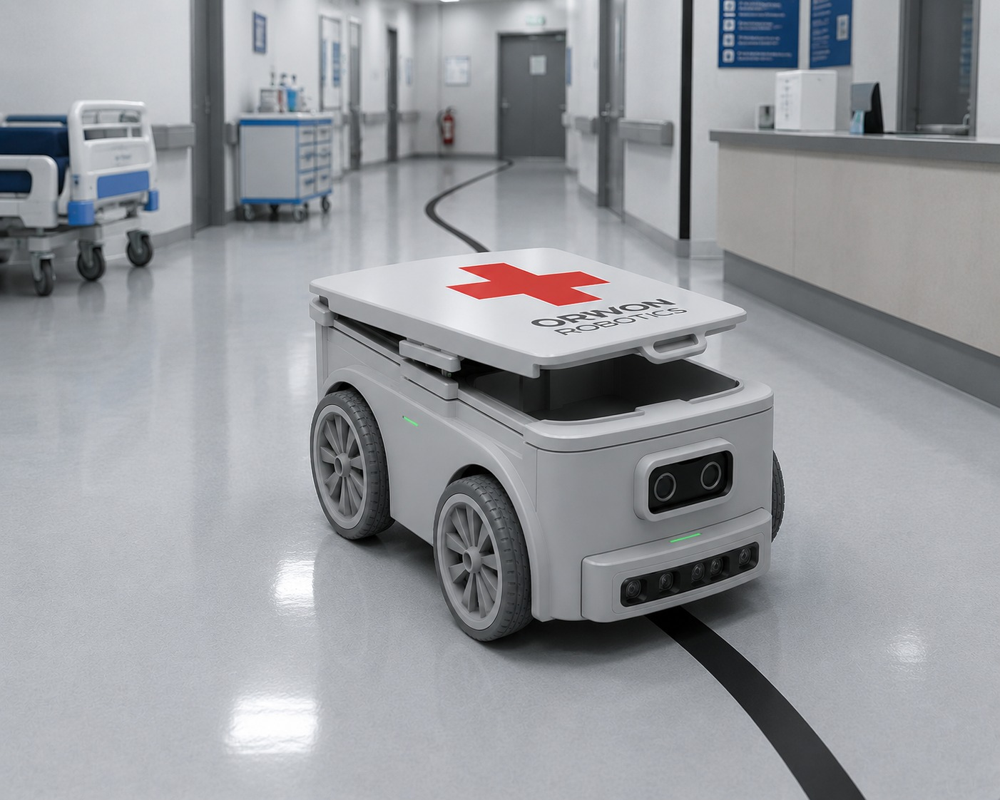
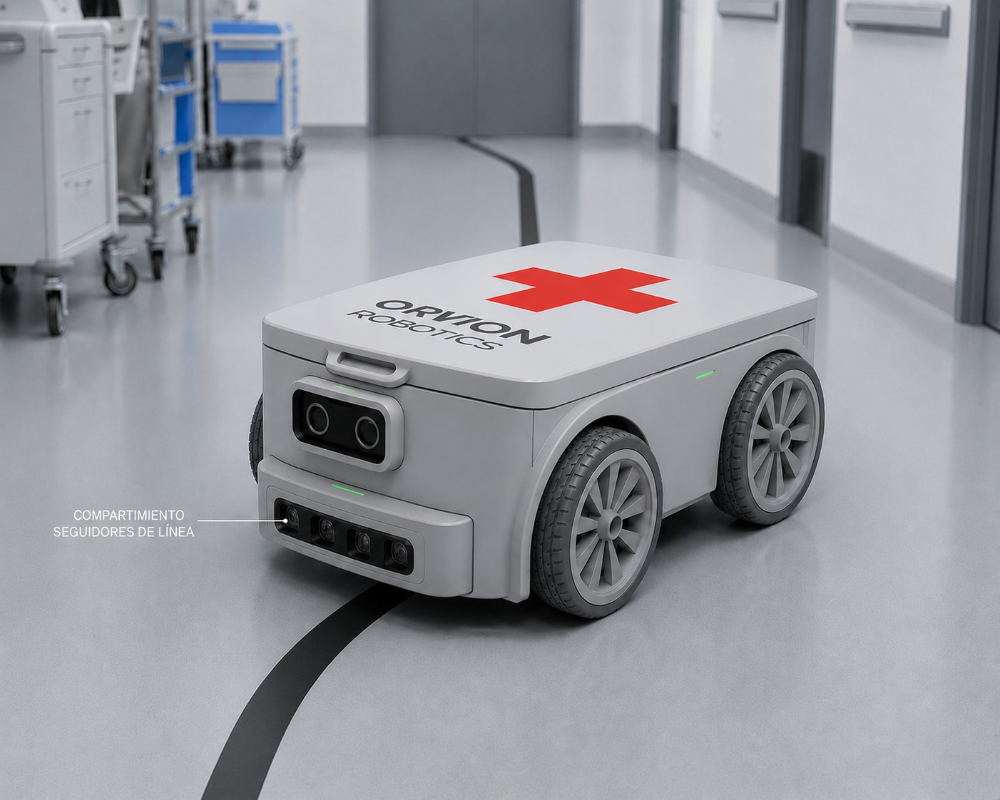

Bit-Track Rover automatiza el transporte interno para que el personal dedique más tiempo a los pacientes y menos al traslado de insumos.
Solicitar una demo

Bit-Track Rover es un robot autónomo que transporta insumos y medicamentos en hospitales siguiendo una línea guía. A través de una app, se puede solicitar la entrega, elegir el origen/destino y monitorear el recorrido en tiempo real. Funciona las 24 horas del día, cuenta con detección de obstáculos y un compartimiento seguro, garantizando el control total de los traslados para que el personal de salud pueda enfocarse en los pacientes.

Bit-Track Rover optimiza el tiempo del personal de salud al reducir traslados internos, mejora la seguridad mediante la trazabilidad de los envíos y se instala rápidamente sin obras. Además, opera las 24 horas y permite recuperar la inversión en menos de 18 meses.

El personal coloca el material a transportar — medicamentos, muestras, insumos o documentos — en el compartimiento seguro del rover. Luego, desde la app, solicita el envío indicando el destino dentro del hospital. Bit-Track Rover recibe la orden, sigue automáticamente la línea guía en el piso y llega al punto indicado sin intervención humana. Al llegar, notifica al destinatario para que retire el material. Simple, rápido y sin margen de error.
Solicita una entrega desde cualquier dispositivo.
Coloca el material de forma segura.
El rover evita obstáculos automáticamente.
El destinatario recibe una notificación.
Este es el punto en el que se encuentra Bit-Track Rover hoy: un prototipo funcional que ya resuelve el traslado interno de insumos y que sigue sumando mejoras antes de su despliegue definitivo.
El rover sigue la línea adherida al piso de forma automática, sin necesidad de obras ni modificaciones en la infraestructura del hospital.
El sensor infrarrojo detecta personas u objetos en la trayectoria y detiene el equipo hasta que el camino vuelva a estar libre.
Los usuarios ya pueden crear su cuenta, iniciar sesión, consultar su rover asignado y acceder a sus datos institucionales.
Estamos integrando el monitoreo del recorrido y las notificaciones automáticas al destinatario en cada entrega.
Nuestra hoja de ruta para que Bit-Track Rover evolucione de un prototipo funcional a una solución completa de logística hospitalaria autónoma.
Incorporar sensores y mapeo del entorno para que el rover pueda moverse por pasillos y sectores sin depender de una línea física en el piso.
Conectar la plataforma con los sistemas de historia clínica y gestión de insumos para automatizar pedidos y registros de trazabilidad.
Coordinar varios rovers en simultáneo, asignando entregas según disponibilidad, distancia y prioridad de cada pedido.
Permitir que el rover opere entre distintos pisos y sectores, comunicándose con ascensores y puertas de acceso controlado.
Ofrecer métricas de tiempos de entrega, volumen de traslados e incidencias para optimizar la logística interna de cada institución.
Avanzar en las validaciones técnicas y regulatorias necesarias para desplegar la solución en hospitales de mayor escala.
Somos un equipo apasionado por la tecnología y la salud. Desarrollamos Bit-Track Rover con el objetivo de optimizar la logística interna de los hospitales, reduciendo tiempos y mejorando la atención al paciente.
No. Solo se pega una línea guía en el piso. Instalación en menos de 1 día sin modificar la infraestructura.
El sensor infrarrojo detecta obstáculos y se detiene automáticamente hasta que el camino esté libre.
Avisa al 20% y vuelve solo a la base de carga. Autonomía de 12 horas, opera 24/7 con recarga automática.
Sí. Compartimiento con traba y trazabilidad completa: quién lo envió, quién lo retiró y a qué hora.